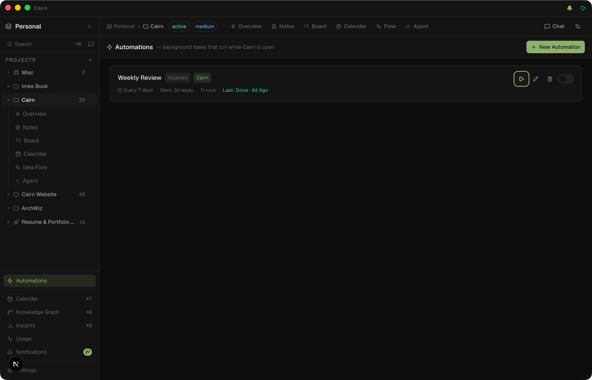

Automations
Schedule background agent tasks that run while Cairn is open — a morning brief, a weekly review, an inbox tidy-up. Build a schedule visually, run on auto or ask before each write, and track what each run produced.

Opening Automations
Click Automations in the sidebar (the ⚡ entry above the workspace views), or the running-automations icon in the title bar next to sync. When a run is executing, that title-bar icon animates and shows a live count.
Creating an automation
Click New automation. The dialog walks you through four things:
- Instructions — what the background agent should do. Runs execute through Cairn's data-only knowledge-work agent: it can read, create, and update notes, tasks, projects, and tags in the scoped project, but it has no shell or file-editing access (unless you attach connectors, whose calls are approval-gated).
- Schedule — the friendly schedule builder, or advanced cron.
- Project scope — the project the agent works in. Workspace-scoped automations (no specific project) are also supported and are managed from this same view.
- Approval mode — Auto (default) runs writes without asking; Ask parks every write action in the approval inbox until you approve or deny it. Read-only tools always run in either mode.
You can also set a timezone, an optional run cap (stop after N runs), and active hours — a window like 09:00–18:00 during which the automation may fire. A run that becomes due outside the window stays pending and fires once the window opens.
Schedule builder
No cron required. Pick a pattern and the form shows exactly the controls you need, with a live "next run" preview that recomputes as you change fields:
- Interval — every N minutes / hours / days.
- Daily — a time of day.
- Weekly — toggle any days of the week, plus a time.
- Monthly — a day of the month and time.
- Once — a date picker and time, for a single run.
- Custom — a raw cron expression for power users.
All schedules are timezone-aware. On launch, any run that became due while Cairn was closed is caught up (once), and a slow run never stacks — if the previous run is still executing, the next is skipped.
Community recipes
In the New automation dialog, choose Start from a community recipe to browse the cairn-community automations catalog. Pick a recipe and it pre-fills the form — name, instructions, schedule, approval mode — for you to tweak before saving. Recipes are data-only (no shell access), and recipes that need connectors declare them up front so you can see and satisfy the requirement before you run.
Connectors
Automations can use the external MCP servers and HTTP services attached to the project. When you pick a connector-aware recipe, or tick Connectors in the form, the run offers those tools to the agent — so an automation can draft a Linear sprint digest, a GitHub PR summary, or a Slack daily recap and write the result into a note.
- Required-connector guard — recipes declare
requires: [{kind, name}]. The browser shows per-connector chips (installed and attached / installed but not attached / not installed) and warns you if something is missing, with an Open connector browser shortcut. - Badges — the form and saved automation cards show a "needs: Linear, GitHub" badge so dependencies are visible at a glance.
- External calls are always gated — a connector call from an automation waits in the approval inbox by default. External side effects are never auto-approved, even in Auto mode.
- Skipped cleanly — a run whose required connector is no longer installed or attached is recorded as skipped with a connector-specific message instead of running silently without its tools.
Approval inbox
Automations set to Ask mode park each write action as a durable approval item. The run pauses until you decide:
- Approve — the write executes, the run continues.
- Always allow — approves and switches that automation to Auto mode going forward.
- Deny — the write is skipped, the run continues (or is aborted per your choice).
Approvals are durable — they persist across restarts in a human-attention queue, resolve once, and are idempotent per run + tool + arguments. Pending approvals are surfaced on the project Overview's triage section and as a badge, so a parked approval is never silently missed. Expired or swept items fail closed (denied), never silently approved.
Notifications
Automation completions, approval requests, and MCP writes surface in the notification center — opened from the bell icon in the title bar or the Notifications entry in the sidebar. It lists recent activity with per-item dismiss, Mark all read, and Clear all, and shows a live unread badge. Unread state persists, and notifications appear in-app while you're focused (not just as OS toasts). The center is pruned automatically (30 days / newest 1,000) so it never grows unbounded.
Run history & results
Each automation card shows its latest run status — a live running indicator with the current tool and an animated bar, or done / error / skipped / denied. Notes and cards a run produced are listed on the card, each clickable to jump straight to it. The full history lives in the Automations view; the most recent run also appears in the Recent runs section on the project Overview.
Every automation run reports its tokens and cost to the Usage view, alongside chat, the agent, and the one-shot AI features — filter by the Automation source to see what your schedules spend.